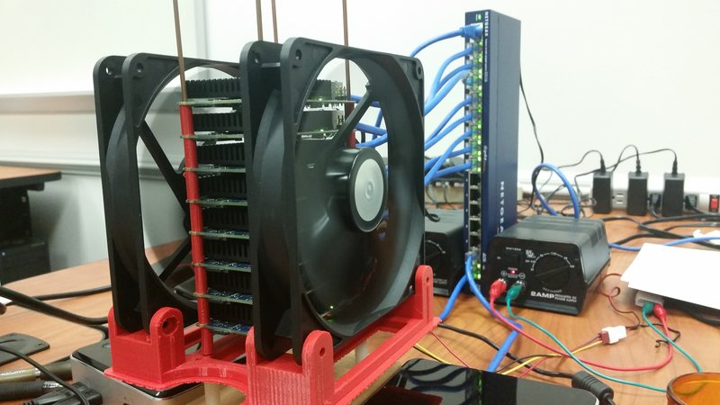

I am a senior from Hampden-Sydney College, VA, pursuing a bachelor degree in Physics and Applied Mathematics, with a minor in Computer Science. I currently work with the Blue Waters (BW) supercomputer to accelerate SQL queries using BW's GPU-enabled nodes. Last year, I worked with Dr.Skadron at University of Virginia on accelerating two applications, one in thermal modeling and the other in parallel encoding.
My research interests lie in the area of parallel computing, especially GPU Computing and its applications. In particular, both general parallel primitives and application-specific GPU implementations highly intrigue me. I am also interested in Computer Modelling and Simulation.
My Honors project for Physics started in Spring 2014 has reached an interesting point: we showed that an opimized version of quantum annealer currently matches the performance of an alledged "quantum computer", the D-Wave One. I'll resume working on this project in Spring 2015. This semester, I will begin designing a loop-parallelizing compiler that targets the CUDA platform. The idea stems from my experiences working with specific applications, which generally entails redesigning the underlying algorithms to extract data-parallelism. I aim to ease this process for programmers.
Current Projects
| |
Developing multi-GPU configuration for accelerating SQL queries Linh Nguyen, Paul Hemler |
 |
Optimizations for Finding Ground States of Quantum Ising Spin Glasses Linh Nguyen, Hugh O. Thurman III |
|  |
Building a Small Scale Distributed System Samuel Sheffield, Linh Nguyen, Paul Hemler |